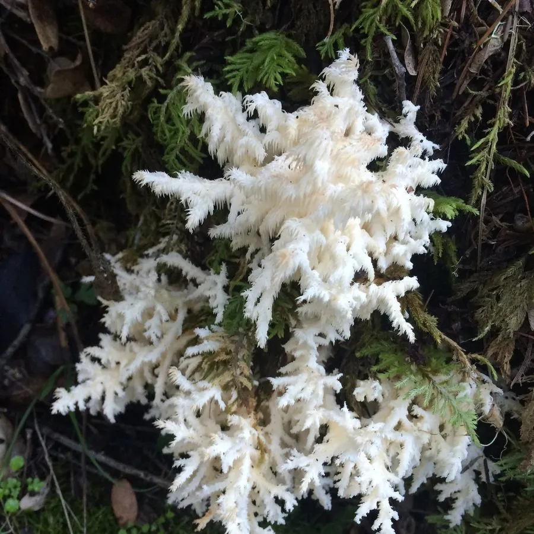

真菌 · 真菌界
珊瑚状猴头 Hericium coralloides

猴头菌科食用菌，子实体反复分枝如珊瑚、枝端垂细刺，生于阔叶树枯木，可食，并常用于药用研究。
- 分类
- 门担子菌门纲伞菌纲目红菇目科猴头菌科属猴头菌属
- 栖息环境
- 阔叶树枯木、倒木与伤口处，秋季发生
- 地理分布
- 北半球温带阔叶林分布，中国东北、华北及欧洲、北美有记录
- 保护级别
- 暂无评估；老龄阔叶林减少使其栖息地受胁
物种志
珊瑚状猴头的子实体肉质，高 10–25 厘米，由基部反复分枝形成珊瑚状或树枝状，分枝表面密生下垂的细刺，刺长 0.5–1 厘米，通体白色，老后转淡黄至淡褐色。菌肉白色，柔嫩。孢子印白色，孢子近球形，具小疣。
珊瑚状猴头生于栎、桦、山毛榉等阔叶树的枯木与伤口处，秋季发生，是典型的木腐菌，可引起木材白色腐朽。它肉质细嫩、味道鲜美，可炒食、炖汤，是猴头菌属中可食的种类之一；同属的猴头菇更是著名的食药两用菌，其多糖被用于胃部疾病的辅助研究。采食时需与生长在枯木上的其他白色珊瑚状真菌区分，并注意不要采食已变黄发苦的老熟个体。
形态与习性
- 子实体高 10–25 厘米，反复分枝如珊瑚
- 菌刺枝端密生下垂细刺，长 0.5–1 厘米
- 孢子印白色，孢子近球形具小疣
- 生境阔叶树枯木与伤口，秋季发生
- 食用性肉质细嫩味鲜，可炒食炖汤
- 药用同属猴头菇多糖用于胃部疾病辅助研究
趣味知识
- 珊瑚状猴头没有菌盖和菌柄，整个子实体就是分枝加下垂的细刺。
- 它和猴头菇是近亲，同属真菌的多糖被广泛研究用于胃黏膜保护。
- 它只长在阔叶树枯木上，是森林中分解枯木的木腐菌。
- 白色转为淡黄、散发酸味时已经过熟，口感和风味都会变差。